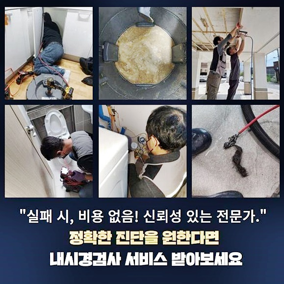
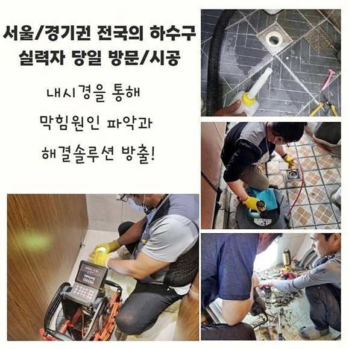
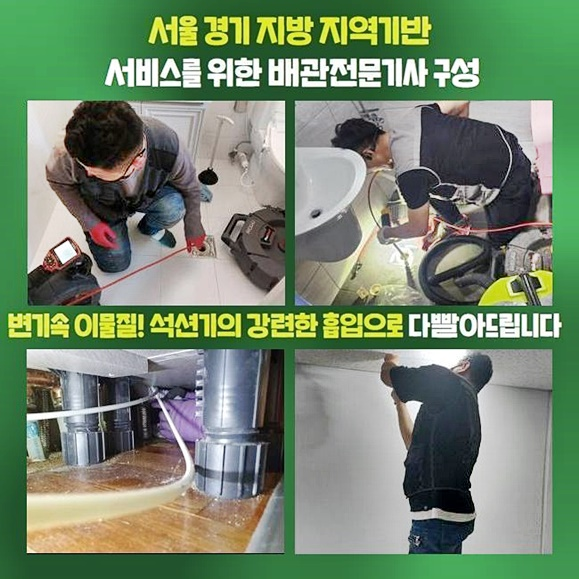
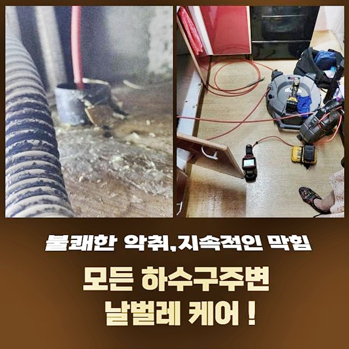
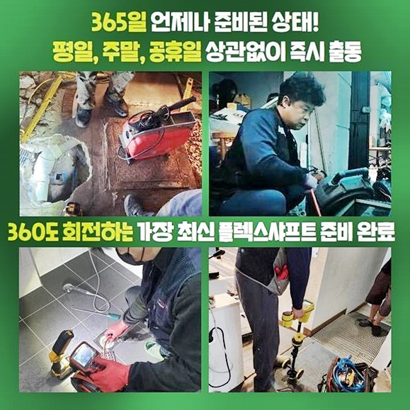
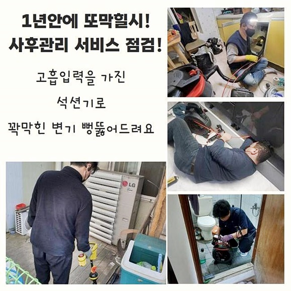
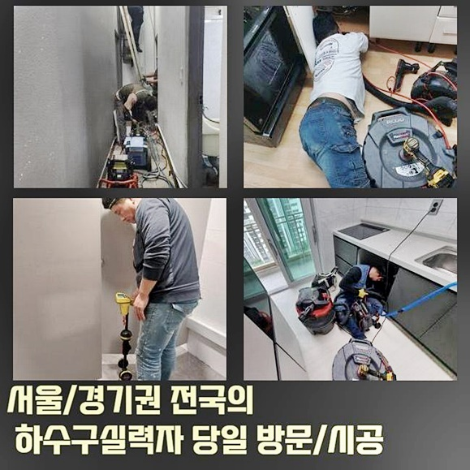

🏠 성남 서현동싱크대배수관역류 대장동 고압세척비용 누수
용인시 처인구 배관막힘 전문 시공 후기

📋 작업 개요
- 위치: 용인시 처인구, 수원시 영통구, 화성시 동탄
- 서비스 유형: 배관막힘, 누수수리, 고압세척, 내시경점검
- 작업 일시:
- 업체명: 하수구수사대 (010-5615-2118)
🔍 문제 상황
성남 서현동싱크대배수관역류 대장동 고압세척비용 누수
반갑습니다 조속한내방을 책임지고있는 저희업체에서는 출장비용에 대하여 받고있지않고 작업에 실패를할때도 비용청구를 드리지않아요
저흴 찾고계시는 여러분들의 만족을위해 수리후 일년동안 추후관리를 제공하고있죠
배수관이 막히게되었을때 여러분은 어떤식으로 해결하고자 하나요
근래에 방문했던 현장사례로 막힌하수구를 뚫는방법에대해 알려드릴테니 꼼꼼하게 읽어보신다면 도움이될거에요
수리난이도가 복잡하다고하여 다른업체들은 해결하지않고 철수하기도해요
저흰 심혈을기울여 작업해서 해결하고자 노력하고있죠
의뢰자의 시간에맞춰 방문또한 진행하고있어요
최근에 방문했던 작업장소도 무리없이 다녀올수있었죠
내방전엔 간단한 막힘정도라고 생각했죠
의뢰자가 현장사진을찍어 보여주신것으로 현장출동전 추측을했어요
내방하여 확인해봤더니 메인배관까지 문제가있는 심화된 작업장소였어요
내외부하수구를 전부작업해 처리할수있었죠

🔎 원인 분석
💡 전문가 진단: 정밀 진단 장비를 사용하여 슬러지의 고착 여부를 판명하고 타격/세척 작업을 실시했습니다.
다음장소로 이동하였는데 의뢰자분께서 말씀해주셨던 내용을 종합해보니 화장실배수구 주위에서 배수상태가 느려지다가 하루지나서 들여다봤더니 완전히막혀 물이흐르지 못했다고하셨어요
급급한심정에 뚫는법을 알아보다가 셀프적인시도를 하셨다고 말씀해주셨습니다
무리하게 시도하다가 오물과 이물들이 역류하게되면서 악취까지올라와 상태가 심화된것인데요
이제는 손쓸수없다보니 하수구업체를 찾으시다가 의뢰를주셨어요
역류하는문제는 일반적으로 배관안속에서 잔해물들이 투입되고 점차쌓이면서 막히게되는 것입니다
막힘문제를 처리하고자 전문기계들을 준비했어요
첫번째로 석션기를통해 하수구내부에있는 각종오물을 빼내주는데요
석션과정을 착수하지못하면 확실하게 해결될수가없죠
이다음엔 배관안의 고착물질들을 샤프트기계를 활용해서 소거시키면됩니다
샤프트도구는 돌처럼굳어진 이물질을 분해시키는 기기라고 할수있죠
한가지더 필수적인기계를 알려드릴게요
하수관막힘이 발현된지점을 알아내기위해서는 배관카메라가 필요합니다
내시경카메라를 투입하면 하수구깊숙한 지점까지 확인할수있어 정확히 막힌문제를 짚어낼수있어요
내시경기기로 문제를확인하니 화장실쪽과 이어져있는 배수관쪽에도 문제가있는걸 확인이가능했죠

🔧 작업 과정
바깥으로이동해 집수정뚜껑을 들추니 이물질이가득해 넘칠수도있었어요
막히는문제의 요인이었던만큼 오염물세척을 진행하기로했어요
입구주위에 들어차있는 물을흡입하고나서 내부작업을 진행하기로했죠
제거해보면 예상과는달리 양이많다보니 시간소요를 감수해야합니다
하지만 이 과정이 중요한 단계이니 다 빨아들일 수 있도록 했습니다
그제야입구가 보이기시작해 배관속을 뚫어내는 작업으로 전동스프링도구를 써서 통수를진행했어요
통수를마치고 고압세척기를 통한 작업과정을 착수하는데 강력한압을통해 오염물이 자리하고있는 위치에 물을쏘는건데요
고압세척기계는 다양한기계중 전문가의 손길이필요한 기기입니다
강한물줄기로 발사가되기에 하수구손상이 일어날수있기 때문이죠
고압세척을 마치게되면 찌꺼기와 이물들이 떨어져나가게 되는것이죠
고착이물을 제거한뒤 거쳐야만하는 과정으로는 석션기를사용해 잔여물질들을 빨아들이는 과정인데요
스켈링과정을 마치고나서는 세척과정이 잘 이루어졌는지 카메라기기로 배관을 살펴보는데요
찌꺼기들이 남겨져 있었으므로 한번더제거해 확실히 마무리할수있었어요
정상적인 배수상황이 돌아왔는지도 확인해드리고있어요
고객과함께 배수상황까지 살펴보고나서야 마치고있으니 걱정마세요
막힘증세를 해결하지못하고 방치하실경우 2차적피해로 이어져서 물이새거나 물이솟구치는 증세까지 발생할수가 있사오니 문제를보이는즉시 대처해보실것을 추천드려요
날이선물체로 하수관을 들쑤시는것은 크랙으로 이어질수있기에 삼가주시는게 좋아요
한번더 일러드리는것으로 혼자서 무리하게 작업하시면 문제증세가 심해질수있으므로 조심하세요
다세대로 이루어진 건물과 영업시설의경우 간헐적으로 점검해보는것이 예방하시는게 좋은방법중 하나입니다
여러번 일러드렸지만 확실히 해결을원하시면 막힌이유가 무엇인지 알아낸후 대책을세우는게 중요해요
배수구막힘을 방치시키지말고 전문가를통해 해결해보세요!


✅ 작업 완료
전문가를 호출할때 살펴보셔야할 사항에대해 알려드려보자면 전문장비를 최첨단으로 구비했는지와 작업비에관하여 수리에 착수하기전에 공개하는지 체크해야합니다
저희의경우 현장으로이동해 증상을확인한후 작업비를 일러드린뒤 고객님이 동의를해야지만 착수하기때문에 염려하실 필요가없겠죠!
1시간내로 도착해드릴수있고 작업계획에있어 투명한 방법으로 보여드리기에 우려마시길 바래요
저희업체로 의뢰주시면 믿음에 보답하게끔 성심성의껏작업해 성공하는결과로 보여드릴게요!
이밖으로도 해소되지 않으신것들이 있으면 맘편히 언제라도 전화하셔서 여쭤보시면 상세히 상담진행 도와드릴게요
저희의글이 도움되셨을거라 생각하고 이만 마치도록할게요! 감사합니다!




⚠️ 하수구 배관 막힘 예방 및 관리 가이드
- ✅ 머리카락, 비닐, 물티슈 등 물에 분해되지 않는 이물질은 절대 흘려보내지 마세요.
- ✅ 기름기 많은 식기는 설거지 전 키친타올로 먼저 기름때를 닦아내세요.
- ✅ 주기적으로 배수구에 뜨거운 물을 가득 부어주어 유지방 고착을 방지하세요.
- ✅ 작업 후 1년 이내 재발 시 무상 A/S 보증 서비스를 제공합니다.
💡 핵심 정리
- 확실한 장비 작업(내시경 점검 및 샤프트 스케일링)으로 원인을 뿌리 뽑습니다.
- 작업 후 1년 이내에 동일한 부위 재발 시 100% 무상 A/S 서비스를 보장합니다.
- 서울 · 경기 · 인천 전 지역에 24시간 언제든 긴급 출동할 수 있도록 항시 대기 중입니다.
❓ 자주 묻는 질문 (FAQ)
🚨 용인시 처인구 배관막힘 문제로 고민이신가요?
정확한 원인 진단과 확실한 시공으로 재발 없는 해결을 약속드립니다.
24시간 긴급 출동 | 서울 · 경기 · 인천 전지역 | 1년 내 재발 시 무상 A/S